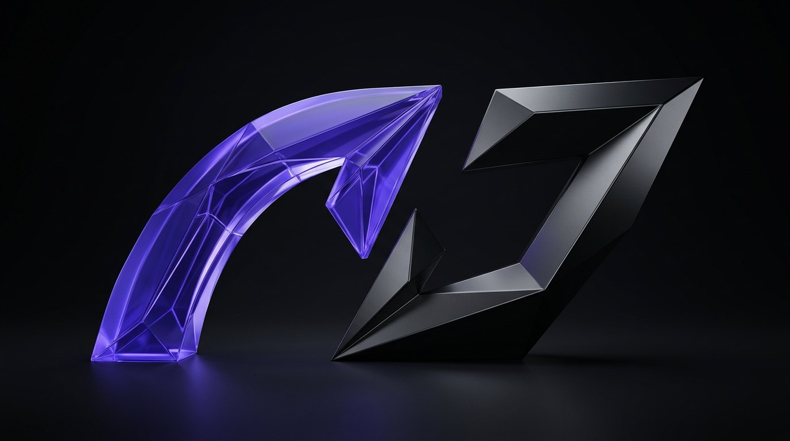

05 / CONTACT
НА СВЯЗИ.
ПО ДЕЛУ.
Вопрос о товаре, заказе или доставке? Выбирай удобный способ связи — мы рядом.
BIORYX / NUTRITION · PERFORMANCE
01 / КОНТАКТЫВЫБИРАЙ
ВЫБИРАЙ
СВОЙ КАНАЛ.
Расскажи, что хочешь уточнить. Если вопрос связан с заказом, укажи его номер — так будет проще разобраться.
02 / ГРОЗНЫЙ И НЕ ТОЛЬКОРЯДОМ,
РЯДОМ,
КОГДА НУЖНО.
Самовывоз и курьер доступны в Грозном. Для отправки через СДЭК уточним возможность, стоимость и сроки после оформления заказа.
По вопросу о привязанном заказе можно также открыть заказ в Telegram-боте и нажать «Задать вопрос».
ДОСТАВКА И ОПЛАТА ↗